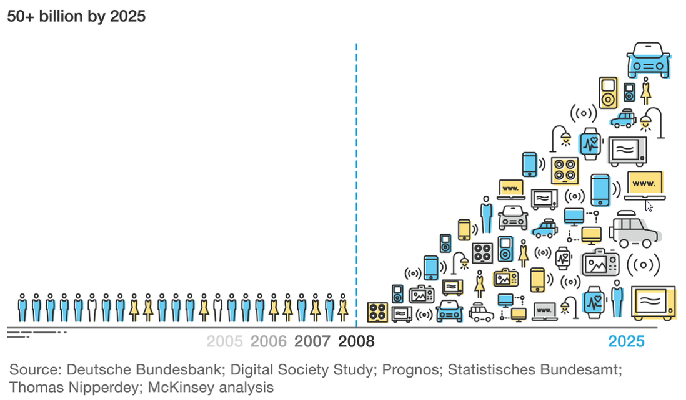

Much as Amazon re-used its shopping site technology to launch Amazon Web Services, we can re-use our TREP and Elektron infrastucture. Instead of keeping it only for collection and aggregation of exchange and financial-industry contributed data, we open it up to the Internet of Things.
This would cement our platform as the de-facto destination for IoT data
It would grow our developer use base and increase the community familiar with our platform
It would drive interest in our analytics ability and ease integration of our data with IoT data
Revenue would scale with use...
The Internet of Things is set to only increase...!

We believe the combination of low-capital outlay and investment (because we already have the global Elektron network and the collection/distribution technology - TREP) yet almost unlimited potential offers Thomson Reuters an exciting opportunity.